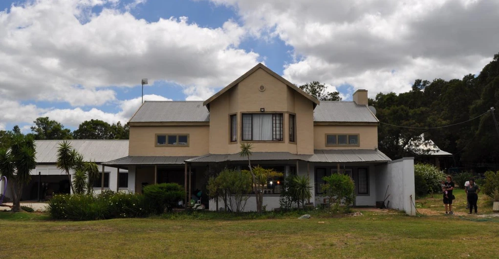
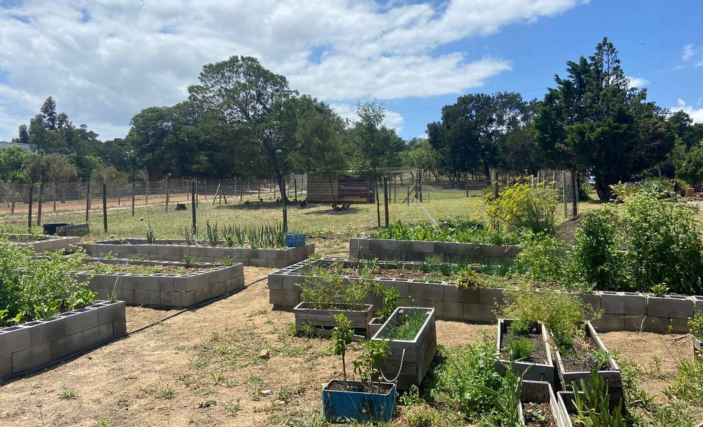

Gordons Bay, South Africa
hetkleinerijk.com
A family run orphanage in Gordons Bay, South Africa. My sister, brother, parents, and I started this after my sister met a mother named Bubbles during a trip to Africa. Bubbles was caring for 8 children and about to lose her home. We found a house, moved them in, and have been running it since.
We found and secured housing for Bubbles and the children. Over time, we restructured from 12 mothers and 8 children to 3 mothers and 18 children.
We set up a kitchen for processing potatoes and started a vegetable garden to grow produce on site. We also started a sewing studio that makes clothing from scrap fabric collected locally.
My sister has a permanent on site presence. I help with funding, finding volunteers, coordinating people to go there, building the website, and supporting the various projects on site. My parents and brother contribute to planning and resources.


